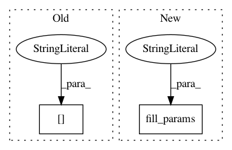

2beb1eca69bc22f79e0fd267377274b699b56b01,dataset/models/tf/resnet.py,ResNet,make_encoder,#Any#Any#Any#,343
Before Change
scope = tf.get_default_graph().get_name_scope()
encoder_tensors = []
for i, _ in enumerate(body["num_blocks"]):
tensor_name = scope + "/body/group-%d"%i + "/output:0"
x = tf.get_default_graph().get_tensor_by_name(tensor_name)
encoder_tensors.append(x)
After Change
-------
tf.Tensor
num_blocks = cls.get("num_blocks", cls.fill_params("body", **kwargs))
with tf.variable_scope(name):
x = cls.body(x, name="body", **kwargs)
In pattern: SUPERPATTERN
Frequency: 3
Non-data size: 2
Instances
Project Name: analysiscenter/batchflow
Commit Name: 2beb1eca69bc22f79e0fd267377274b699b56b01
Time: 2017-12-15
Author: rhudor@gmail.com
File Name: dataset/models/tf/resnet.py
Class Name: ResNet
Method Name: make_encoder
Project Name: analysiscenter/batchflow
Commit Name: 02098c5c44893ce455aefcfc452aa00bd655987b
Time: 2017-11-15
Author: rhudor@gmail.com
File Name: dataset/models/tf/unet.py
Class Name: UNet
Method Name: body
Project Name: analysiscenter/batchflow
Commit Name: 02098c5c44893ce455aefcfc452aa00bd655987b
Time: 2017-11-15
Author: rhudor@gmail.com
File Name: dataset/models/tf/inception.py
Class Name: Inception_v1
Method Name: body